Teaching and lectures
Quantum-computing and electromagnetics courses at FIU, an open lecture course that anyone can use, and recorded lectures. The courses use Python, Jupyter notebooks, Qiskit, simulations, and no-cost materials.
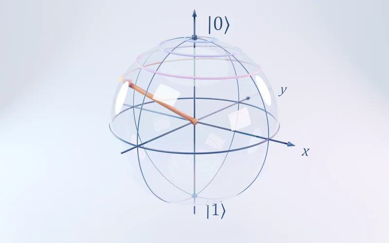
Courses at FIU
EEE 4423 and EEE 6429 form FIU's first undergraduate and graduate quantum-computing sequence.
EEE 4423: Introduction to Quantum Computers
Undergraduate introduction to quantum information, circuits, gates, algorithms, and hands-on Qiskit work. The course carries FIU's Affordability Counts medallion because it has no required textbook cost.
EEE 6429: Advanced Quantum Computers
Graduate quantum computing with a deeper treatment of algorithms, noise, hardware constraints, and simulation. Also an Affordability Counts course.
EEL 6020: Numerical Analysis of Electrical Devices
Numerical methods and computational modeling for electrical devices, fields, resonators, and engineering systems.
EEL 6931: Quantum Technologies and Materials (Special Topics)
Quantum technologies, materials, photonics, sensing, and new electromagnetic platforms.
Quantum Nanophotonics (Special Topics)
Light-matter interaction, nanophotonic resonators, metasurfaces, polaritons, and quantum optical systems.
Senior Design I and II
Faculty mentoring for engineering design teams; see the current and past teams.
Open quantum-computing lecture course
The full sequence of quantum-computing lectures and assignments is free on GitHub for instructors, students, and independent learners. It includes self-contained Jupyter notebooks, current Qiskit examples, figures, references, and homework in order of difficulty.
Book
A. Krasnok, Introduction to Quantum Computing and Sensing for Electrical Engineers: A Hands-On Guide, Springer, 2026. The book brings quantum computing and quantum sensing together for engineering students and practitioners, with Python examples and system-level context. Book page at Springer
Recorded lectures
More than 70 recorded modules support the quantum-computing and electromagnetics courses. A selection is below; all of them are on the QTM Krasnok YouTube channel.
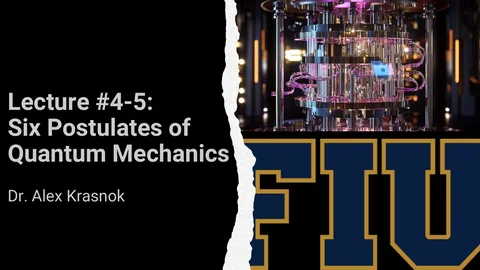
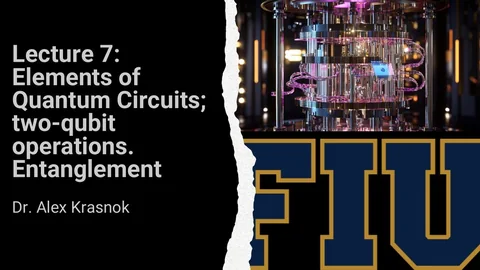
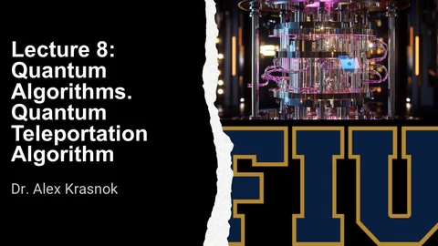
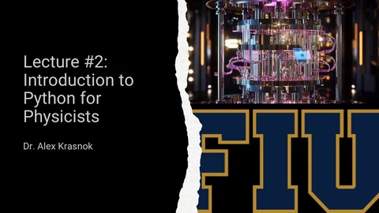
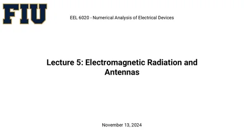
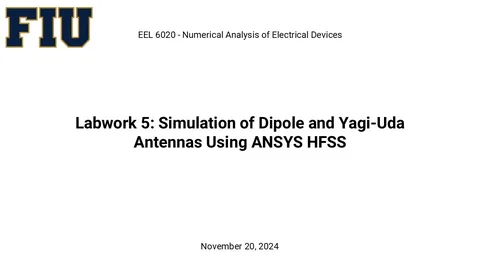
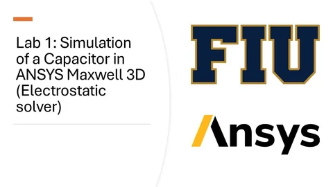
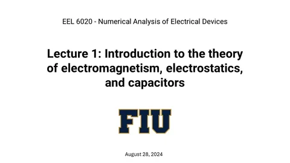
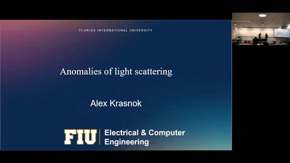
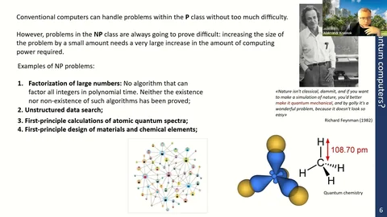